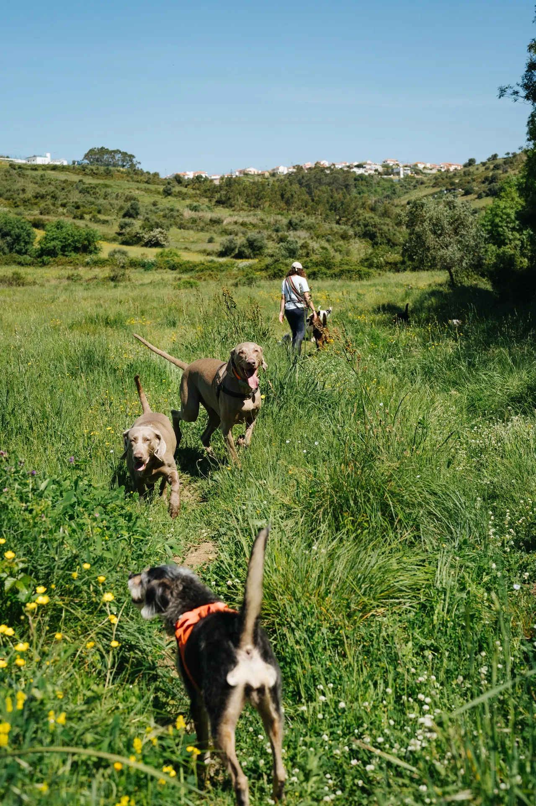

Todos os cães se juntam para explorar e divertir — sejam da creche, estadia ou apenas para passeios!
Os nossos passeios na natureza conciliam exploração sensorial, socialização criteriosa e práticas de bem-estar canino. Selecionamos trilhos que estimulam o olfato, a curiosidade e a mobilidade, adaptando ritmo e duração a cada grupo para promover segurança física e equilíbrio emocional.

1 / 0
FAQ
O que são os passeios na natureza?
São saídas em grupo para trilhos naturais, onde os cães exploram, socializam e desfrutam de estímulos sensoriais num ambiente seguro e controlado.
Quantos cães vão em cada passeio?
Os grupos são pequenos e organizados por compatibilidade, garantindo segurança e atenção individualizada a cada cão.
Para que cães são adequados?
Para cães sociáveis que gostem de explorar e interagir com outros cães. Fazemos sempre uma avaliação prévia do comportamento.
Que locais visitam?
Escolhemos trilhos variados na zona de Sintra e arredores, sempre adaptados às condições meteorológicas e ao perfil do grupo.
O meu cão precisa de estar na creche para ir aos passeios?
Não! Os passeios na natureza estão abertos a todos os cães, independentemente de frequentarem a creche ou outros serviços.
Devo avisar sobre intolerâncias alimentares?
Sim. É importante avisar antecipadamente caso o cão apresente alguma intolerância alimentar, para que possamos garantir a sua segurança durante o passeio.